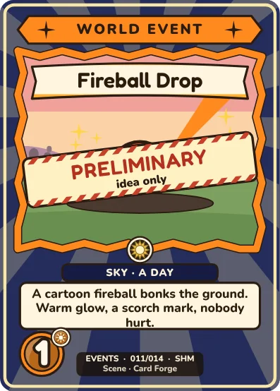
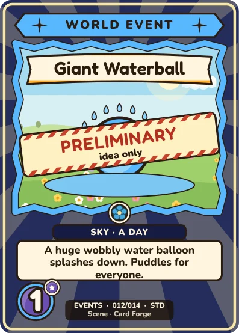
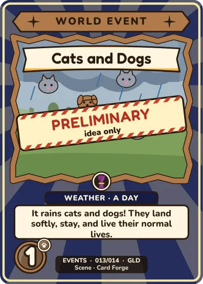
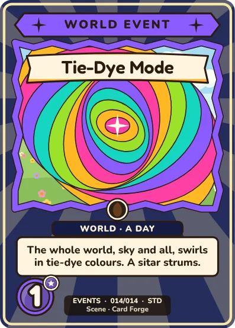

Each lasts one in-game day, and nobody is hurt. Tie-Dye Mode swirls the whole world with a sitar strum over the music. The sky events add a short silly scream and a spooky swell. In the game: toy box, World events.



